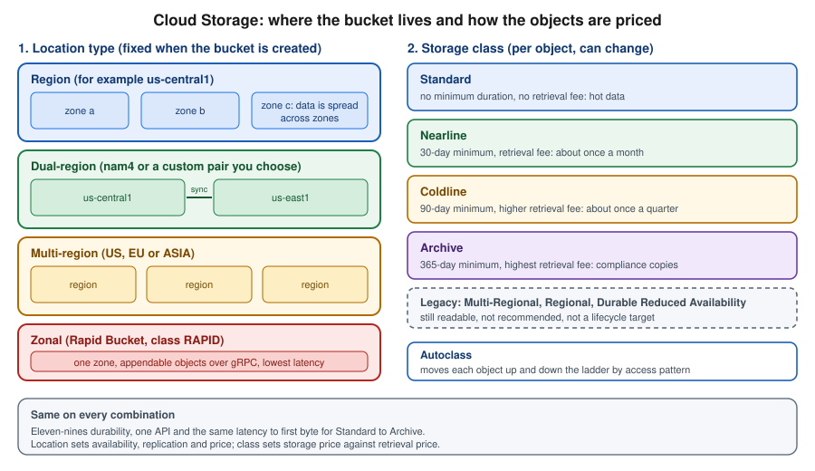

Cloud Storage
|
This content was generated with the assistance of AI and should be verified against the official documentation before being relied on in production. |
Commands and behaviour below are current for the gcloud CLI 586 line, the Google Cloud Client Libraries for Java (through
the libraries-bom) and Spring Cloud GCP 8.x (Spring Boot 4) or 7.4.x (Spring Boot 3), checked 2026-10-01. Cloud Storage
changed a lot in 2025 and 2026 (Rapid Bucket, Rapid Cache, Storage Intelligence), so confirm flags with
gcloud storage buckets create --help and the linked reference pages before relying on them in automation. The project
my-project-id, the region us-central1 and the bucket names are placeholders.
Cloud Storage is the place where Bookshelf keeps every file that is not a database row: the static web front end in
bookshelf-web-$PROJECT_ID and the book covers and PDF uploads in bookshelf-uploads-$PROJECT_ID. This page is the
data-plane and storage-management half of the service: what a bucket and an object are, where a bucket can live, which
storage class and lifecycle rule keeps the bill small, how soft delete and versioning protect the data, and how to move
data in and out from the console, the gcloud storage CLI, Java and a mounted file system. Access control (uniform
bucket-level access, IAM roles, signed URLs, public access prevention, CMEK, retention locks) and the static website are
in Cloud Storage Security and Static Sites; the CDN in front of the front-end bucket is in
Cloud CDN and Media CDN. Disks and shared file systems are in
Block and File Storage on Google Cloud. The AWS and Azure counterparts are
S3 Object Storage and Blob Storage, and the generic Spring Boot view of
object stores is File Storage & Object Stores.

Buckets, objects and namespaces
Cloud Storage is an object store, not a file system. You create a bucket (a named container with a location) and put
objects into it. An object is data plus metadata, addressed by its name. The name covers/9780134685991.jpg is one
flat string; the slash is only a convention, and the console shows covers/ as a folder because it groups names by
prefix and delimiter. Bucket names live in a single global namespace shared by every project: a name is 3 to 63
characters of lowercase letters, digits, hyphens, underscores and periods, and must be unique worldwide. That is why the
Bookshelf buckets end in the project ID. Object names are up to 1,024 bytes of UTF-8.
Cloud Storage is strongly consistent for object reads, writes, deletes and listings, so a successful upload is visible to the next read or list from anywhere. Durability is designed for eleven nines (99.999999999 %) for every storage class and location; availability depends on the location type and class (below).
Flat versus hierarchical namespace
A default bucket has a flat namespace: folders are only prefixes. Renaming a "folder" therefore means copying and deleting every object under it, which is slow and not atomic. A bucket created with hierarchical namespace has real folder resources, atomic folder renames and higher read/write rates for file-oriented workloads such as analytics and AI training. It requires uniform bucket-level access, can only be chosen when the bucket is created, and is required by Rapid Buckets. Bookshelf’s two buckets stay flat because their access is by whole object name.
Separate from that, managed folders are IAM-bearing prefixes on a flat bucket; they are covered with access control in Cloud Storage Security and Static Sites.
Locations
The location is chosen at creation and cannot be changed afterwards (to move data you copy it to a new bucket). There are four kinds.
| Location type | What it is | When to use it |
|---|---|---|
Region |
One region such as |
Data used by compute in the same region, lowest storage price. Bookshelf uploads in |
Dual-region |
A predefined pair (for example |
Business-critical data that must stay available during a regional outage while remaining in two named regions. |
Multi-region |
A large geography, |
Content served to users in a whole continent, such as media. Bookshelf puts the front end behind a CDN instead. |
Zonal (Rapid Bucket) |
One zone in a region. Objects are appendable, accessed over gRPC, and use the |
Latency-critical, I/O-intensive work colocated with compute, such as training data and checkpoints. |
Derived from the Cloud Storage locations and availability and durability pages.
Size and rate limits
-
An object can be up to 5 TiB. A single non-resumable request is limited by the client, so use resumable uploads (below) for anything beyond a few megabytes.
-
There is no limit on the number of objects in a bucket or on the total size.
-
A single object name supports about one write per second; do not use one object as a shared counter or log.
Derived from Cloud Storage quotas and limits; limits change, so check the page for the current numbers.
Creating a bucket
In the Google Cloud console
-
Select the project in the project picker and open Cloud Storage → Buckets. If the API is not yet enabled the console enables it for you; the CLI equivalent is below.
-
Choose Create, enter a globally unique name such as
bookshelf-uploads-my-project-id, and choose Continue. -
Location type: choose Region and
us-central1. The panel shows the price and availability trade-offs of the other types. -
Storage class: choose Set a default class → Standard, or choose Autoclass to let Cloud Storage move objects for you (recommended for data whose access pattern you do not know). Do not choose a colder class for a bucket that applications read daily.
-
Access control: keep Enforce public access prevention on this bucket ticked and Uniform access control. Both are the defaults for new buckets in organizations created since 2024-05-03 (secure by default) and the safe choice everywhere.
-
Data protection: leave Soft delete policy at the default (7 days) and tick Object versioning for the uploads bucket. Hierarchical namespace can be enabled under Enable hierarchical namespace on this bucket if you need it.
-
Choose Create. To work from a terminal without installing anything, open Cloud Shell from the toolbar; it is already authenticated as you and has the gcloud CLI installed.
With the gcloud CLI
gcloud storage is the current command group for Cloud Storage. Its sub-groups are buckets, objects, folders,
managed-folders and operations, plus the shortcut verbs cp, mv, rm, rsync, ls, cat and du. It
replaces gsutil, which is covered in gsutil is legacy.
gcloud services enable storage.googleapis.com
export PROJECT_ID=$(gcloud config get-value project)
export REGION=us-central1
export BUCKET=bookshelf-uploads-$PROJECT_ID
gcloud storage buckets create gs://$BUCKET \
--location=$REGION \
--default-storage-class=STANDARD \
--uniform-bucket-level-access \
--public-access-prevention \
--soft-delete-duration=7d
# Turn on object versioning for the uploads bucket
gcloud storage buckets update gs://$BUCKET --versioning
# Inspect the result
gcloud storage buckets describe gs://$BUCKET \
--format="yaml(name,location,locationType,storageClass,softDeletePolicy,versioning)"Derived from gcloud storage buckets create, gcloud storage buckets update and Create buckets.
Other creation variants use the same command with different flags.
# Dual-region (predefined) with turbo replication
gcloud storage buckets create gs://$BUCKET-dr \
--location=nam4 --recovery-point-objective=ASYNC_TURBO \
--uniform-bucket-level-access
# Hierarchical namespace (needs uniform bucket-level access)
gcloud storage buckets create gs://$BUCKET-hns \
--location=$REGION --uniform-bucket-level-access --enable-hierarchical-namespace
# Autoclass instead of a fixed default class
gcloud storage buckets create gs://$BUCKET-auto \
--location=$REGION --uniform-bucket-level-access --enable-autoclassDerived from Cloud Storage locations, Use turbo replication and Create and manage buckets with hierarchical namespace.
A zonal Rapid Bucket is created with a zone placement and the RAPID default class (flags are listed under
gcloud storage buckets create --help); see Rapid Bucket
for the current recipe, since the feature is new. Organizations created on or after 2024-05-03 enforce uniform
bucket-level access and public access prevention by default through secure-by-default organization policies; older
guides that create a bucket and then run gsutil acl ch -u AllUsers:R fail there, and the right pattern is in the
security page.
Uploading and managing objects
In the Google Cloud console
-
Open the bucket and choose Upload → Upload files (or Upload folder, or drag files onto the page).
-
Select an object to see Overview, Version history, Live object details, and the Preview of images. The Copy URL and Download buttons are there too; for a private object the URL only works for principals with access.
-
Create folder adds a folder placeholder; in a flat bucket it is a zero-byte object whose name ends in a slash.
-
Use Edit storage class or Edit metadata on an object to rewrite it. Changing an object’s class rewrites it, which can incur early deletion and operation charges.
-
Select several objects to Delete or Download; deleted objects stay recoverable for the soft-delete retention period.
With the gcloud CLI
# Copy, sync, list, move and remove (parallelism and resumable uploads are automatic)
gcloud storage cp cover.jpg gs://$BUCKET/covers/9780134685991.jpg \
--content-type=image/jpeg \
--custom-metadata=author=Bloch,source=import
gcloud storage rsync ./covers gs://$BUCKET/covers --recursive --delete-unmatched-destination-objects
gcloud storage ls --long --readable-sizes gs://$BUCKET/covers/
gcloud storage mv gs://$BUCKET/covers/old.jpg gs://$BUCKET/covers/archive/old.jpg
gcloud storage rm --recursive gs://$BUCKET/covers/tmp/
# Read an object or its metadata
gcloud storage cat gs://$BUCKET/covers/9780134685991.jpg > out.jpg
gcloud storage objects describe gs://$BUCKET/covers/9780134685991.jpg \
--format="yaml(name,size,storage_class,generation,metadata)"
# Change metadata and storage class of existing objects
gcloud storage objects update gs://$BUCKET/covers/9780134685991.jpg \
--cache-control="public, max-age=86400" --storage-class=NEARLINEDerived from gcloud storage reference, Upload objects and Copy, rename, and move objects.
rsync with the delete flag makes the destination match the source, so run it with --dry-run first. Wildcards such as
gs://$BUCKET/covers/** work and are expanded by the tool, not the shell, so quote them. gcloud storage returns a
non-zero exit code when any object fails, which makes it safe in scripts.
Preconditions
Every object has a generation that changes on each overwrite. --if-generation-match=0 means "create only if absent",
which gives optimistic concurrency without locks; a violated precondition returns 412. See
Request preconditions.
Transfers
Parallel and resumable uploads
gcloud storage splits work across processes and threads on its own, so the -m option and .boto tuning that older
gsutil guides recommend are unnecessary. For a single large file it uses parallel composite uploads: the file is
uploaded as several temporary component objects in parallel and then composed into the final object, which is
automatically enabled above a threshold (150 MiB by default). Smaller files use a resumable upload, which sends data in
chunks and can continue after a network failure from the last confirmed byte, using a session URI that stays valid for
a week.
# Inspect and tune the behaviour (properties are stored in your gcloud configuration)
gcloud config get storage/parallel_composite_upload_enabled
gcloud config set storage/parallel_composite_upload_threshold 200MiB
gcloud config set storage/process_count 8
gcloud config set storage/thread_count 8
# Switch parallel composite uploads off for one command
CLOUDSDK_STORAGE_PARALLEL_COMPOSITE_UPLOAD_ENABLED=False gcloud storage cp big.iso gs://$BUCKET/iso/Derived from Parallel composite uploads, Resumable uploads and gcloud topic configurations.
A composite object has a CRC32C checksum but no MD5 hash, so a client that insists on MD5 verification cannot validate it. The temporary component objects are deleted after the compose, and if an upload is interrupted they remain visible until you delete them or a lifecycle rule removes them. Parallel composite uploads need permission to create and delete objects in the bucket, so a role with only create rights is not enough.
gsutil is legacy
Older guides use gsutil cp, gsutil -m rsync and gsutil lifecycle set. gsutil is now a legacy, minimally maintained
tool: it does not understand newer features such as soft delete restores and managed folders, and after March 2027 it will
no longer be bundled with the gcloud CLI (it will remain installable from PyPI). The current approach is gcloud storage
for everything in this page. Most commands map directly (gsutil cp to gcloud storage cp,
gsutil ls -l to gcloud storage ls --long, gsutil lifecycle set to gcloud storage buckets update --lifecycle-file),
but output formats and some flags differ, so re-test scripts rather than aliasing the old name. The bq and kubectl
companions are unaffected.
See Transition from gsutil to gcloud storage for the command-by-command table and the support notice.
Storage Transfer Service
For bulk movement between systems use Storage Transfer Service (STS) instead of looping cp. It is a managed,
parallel service that copies from Amazon S3, Azure Blob Storage, other Cloud Storage buckets, public HTTP(S) URL lists
or on-premises file systems (through agents you install), can run once or on a schedule, preserves metadata, verifies
checksums, retries and can delete the source after a successful copy. Event-driven transfers start a copy when new
objects arrive in an S3 bucket (through SQS) or a Cloud Storage bucket (through Pub/Sub). Check the Storage Transfer Service pricing page for
what is charged beyond the source’s egress and operations.
In the console open Data transfer → Storage Transfer Service, choose Create transfer job, then the source, the destination and when to run it.
gcloud services enable storagetransfer.googleapis.com
# One-off copy from an S3 bucket (credentials come from a file or an AWS role through federation)
gcloud transfer jobs create s3://legacy-bookshelf-bucket gs://$BUCKET/imported/ \
--source-creds-file=aws-creds.json \
--overwrite-when=different \
--name=import-legacy-covers
# Between two Cloud Storage buckets, daily
gcloud transfer jobs create gs://$BUCKET gs://$BUCKET-dr \
--schedule-repeats-every=1d --delete-from=never
# Watch jobs and their runs
gcloud transfer jobs list
gcloud transfer operations list --job-names=import-legacy-coversDerived from Storage Transfer Service overview, gcloud transfer jobs create and event-driven transfers.
For on-premises sources create an agent pool (gcloud transfer agent-pools create) and run the agent in a container on a
host that can reach the data; the agent only makes outbound HTTPS connections. For tens or hundreds of terabytes over a
slow link, Transfer Appliance is a rack-mountable device Google ships to you, which you fill and send back for upload.
Small, occasional copies are better done with gcloud storage cp. To move data in the other direction, gcloud storage cp
and rsync also accept s3:// URLs when AWS credentials are configured, which suits one-off checks but not bulk work.
Storage classes
Every object has a storage class, set per object and defaulting to the bucket’s default storage class. All classes have the same API, latency to first byte (milliseconds) and durability; they differ in the storage price, the retrieval price and a minimum storage duration for which you are billed even if you delete the object earlier.
| Class | Minimum duration | Retrieval fee | Meant for | Bookshelf use |
|---|---|---|---|---|
Standard |
none |
none |
Frequently accessed ("hot") data, short-lived data, data read by colocated compute. |
Front end and the current month’s covers. |
Nearline |
30 days |
yes |
Data read about once a month or less, such as backups. |
Covers older than a month. |
Coldline |
90 days |
yes, higher |
Data read about once a quarter or less, such as disaster-recovery copies. |
Last year’s order exports. |
Archive |
365 days |
yes, highest |
Data read less than once a year, kept for compliance. |
Seven-year audit exports. |
Rapid |
none |
none |
Zonal, appendable, I/O-intensive workloads (Rapid Bucket only). |
Not used. |
Derived from the Cloud Storage classes page.
Deleting or overwriting an object before its minimum duration is billed as if it had been stored for the full duration (an early deletion fee), and rewriting it into a colder class restarts the clock. "Cold" does not mean slow: Archive is available immediately with no restore step, only a retrieval fee and higher operation prices. The older classes Multi-Regional, Regional and Durable Reduced Availability (DRA) are legacy: DRA is not a valid lifecycle target, and guides that use it for "cheaper, less available" storage are outdated.
# Rewrite existing objects into a colder class (rewrites the data, so early deletion fees may apply)
gcloud storage objects update "gs://$BUCKET/exports/2025/**" --storage-class=COLDLINE
# Upload straight into a class
gcloud storage cp export.csv gs://$BUCKET/exports/2026/ --storage-class=NEARLINEDerived from Change an object’s storage class and gcloud storage objects update.
Autoclass
Autoclass manages the class for you. When it is enabled on a bucket, every new object starts in Standard; objects that have not been read or written move to Nearline after 30 days, Coldline after 90 days and (optionally) Archive after 365 days, and an object that is read moves back to Standard. Autoclass charges no retrieval fees or early deletion fees for the moves it makes, and instead bills a small management fee per object, so it pays off for large buckets whose access pattern is unknown or changes, and not for buckets where you know exactly when data goes cold (a lifecycle rule is cheaper and more predictable there). Objects smaller than 128 KiB are not moved. You can enable it on an existing bucket, but a bucket with Autoclass cannot also have lifecycle rules that set storage classes.
gcloud storage buckets update gs://$BUCKET --enable-autoclass --autoclass-terminal-storage-class=ARCHIVE
gcloud storage buckets describe gs://$BUCKET --format="yaml(autoclass)"
gcloud storage buckets update gs://$BUCKET --no-enable-autoclassDerived from Autoclass and Using Autoclass.
Lifecycle rules
Object Lifecycle Management applies rules to objects automatically: each rule is a set of conditions and one
action. The actions are SetStorageClass (only to a colder class, never back), Delete, and
AbortIncompleteMultipartUpload (removes the parts of abandoned XML API multipart uploads). Common conditions are
age (days since creation), createdBefore, isLive, matchesStorageClass, matchesPrefix/matchesSuffix,
numNewerVersions (for versioned buckets), daysSinceNoncurrentTime and daysSinceCustomTime (a timestamp you set on
the object). Rules are evaluated asynchronously, so a change can take up to 24 hours to apply, and an action that matches
at the same time as another follows a fixed priority (Delete beats SetStorageClass).
For Bookshelf’s uploads bucket the policy below moves covers to Nearline after 30 days, to Coldline after a year, deletes temporary uploads after a week, and removes noncurrent versions after 30 days.
{
"rule": [
{
"action": { "type": "SetStorageClass", "storageClass": "NEARLINE" },
"condition": { "age": 30, "matchesPrefix": ["covers/"], "matchesStorageClass": ["STANDARD"] }
},
{
"action": { "type": "SetStorageClass", "storageClass": "COLDLINE" },
"condition": { "age": 365, "matchesPrefix": ["covers/"], "matchesStorageClass": ["NEARLINE"] }
},
{
"action": { "type": "Delete" },
"condition": { "age": 7, "matchesPrefix": ["tmp/"] }
},
{
"action": { "type": "Delete" },
"condition": { "isLive": false, "daysSinceNoncurrentTime": 30 }
},
{
"action": { "type": "AbortIncompleteMultipartUpload" },
"condition": { "age": 3 }
}
]
}gcloud storage buckets update gs://$BUCKET --lifecycle-file=lifecycle.json
gcloud storage buckets describe gs://$BUCKET --format="json(lifecycle_config)"
# Remove all rules
gcloud storage buckets update gs://$BUCKET --clear-lifecycleDerived from Manage object lifecycles, Object Lifecycle Management and gcloud storage buckets update.
In the console, open the bucket’s Lifecycle tab, choose Add a rule, pick actions, conditions and scope, and save. A
lifecycle rule that changes class does not trigger retrieval fees, but it does restart the minimum-duration clock of the
new class, and SetStorageClass into a class whose minimum has not elapsed for a later Delete produces early deletion
charges, so keep delete ages longer than the class minimum (a Delete at 60 days of an object moved to Coldline at day 30
bills the full 90 days).
The top chain is the explicit lifecycle policy above; the bottom chain is Autoclass. Pick one per bucket.
Protecting data
Soft delete
Soft delete is on by default for new buckets since March 2024: a deleted or overwritten object (and a deleted bucket’s contents) is kept for the retention duration, 7 days by default and configurable between 7 and 90 days (0 turns it off), and can be restored. Soft-deleted bytes are billed as storage in their original class until they expire, so a bucket holding mostly temporary data (build caches, scratch files) can see its bill rise unexpectedly; turn soft delete off or shorten it there. The setting is per bucket, with a project default that can be set through organization policy.
# Set the retention on an existing bucket (use 0 to disable)
gcloud storage buckets update gs://$BUCKET --soft-delete-duration=14d
# List what has been soft-deleted, then restore
gcloud storage ls --soft-deleted gs://$BUCKET/covers/
gcloud storage restore "gs://$BUCKET/covers/9780134685991.jpg#<generation>"
# Restore everything deleted under a prefix
gcloud storage restore --all-versions "gs://$BUCKET/covers/**"Derived from Soft delete, Use soft delete and gcloud storage restore.
A restored object becomes a new live object in the same bucket and, as the page above explains, in the Standard class whatever it used before. In the console, use the bucket’s Objects tab and its Soft deleted filter, select the objects and choose Restore. Soft delete is not a backup against someone with delete rights who also disables it; combine it with the retention controls in the security page for regulated data.
Object versioning
Object versioning keeps every overwritten or deleted object as a noncurrent version identified by its generation number.
Reading a name returns the live version; reading name#<generation> returns a specific one. It protects against bad
overwrites by an application, which soft delete also does, but it keeps versions indefinitely (until lifecycle rules remove
them) and exposes them for listing and restore without a time limit. Enable it for data you cannot regenerate, and always
pair it with a lifecycle rule such as numNewerVersions so noncurrent versions do not accumulate.
gcloud storage ls --all-versions gs://$BUCKET/covers/9780134685991.jpg
gcloud storage cp "gs://$BUCKET/covers/9780134685991.jpg#<generation>" gs://$BUCKET/covers/9780134685991.jpg
gcloud storage rm "gs://$BUCKET/covers/9780134685991.jpg#<generation>"Derived from Object versioning and Use object versioning.
Retention and holds
Bucket retention policies with Bucket Lock, Object Retention Lock and holds block deletion even by owners and are irreversible once locked; they are in Cloud Storage Security and Static Sites. A locked policy also stops you deleting the bucket during the retention period.
Events
Cloud Storage can notify other services when objects change. The recommended mechanisms are Pub/Sub notifications (a
bucket-level configuration that publishes a message for events such as OBJECT_FINALIZE, OBJECT_DELETE,
OBJECT_ARCHIVE and OBJECT_METADATA_UPDATE) and Eventarc triggers (direct Cloud Storage events, delivered as CloudEvents
to Cloud Run services and functions). The older Object Change Notification (webhook channels created with
watchbucket) is deprecated; do not use it in new code. In Bookshelf, finalizing a cover upload publishes to the topic
covers-uploaded, which the notifier or a thumbnail function consumes; the full pattern is in
Cloud Run Functions and Events and Messaging and Integration.
gcloud services enable pubsub.googleapis.com eventarc.googleapis.com
gcloud pubsub topics create covers-uploaded
# The Cloud Storage service agent must be allowed to publish to the topic
PROJECT_NUMBER=$(gcloud projects describe $PROJECT_ID --format="value(projectNumber)")
SA="service-$PROJECT_NUMBER@gs-project-accounts.iam.gserviceaccount.com"
gcloud pubsub topics add-iam-policy-binding covers-uploaded \
--member="serviceAccount:$SA" --role="roles/pubsub.publisher"
gcloud storage buckets notifications create gs://$BUCKET \
--topic=covers-uploaded --event-types=OBJECT_FINALIZE --object-prefix=covers/
gcloud storage buckets notifications list gs://$BUCKETDerived from Pub/Sub notifications for Cloud Storage, gcloud storage buckets notifications create and Eventarc Cloud Storage triggers.
Delivery is at least once and not ordered, so consumers must tolerate duplicates. A function that writes back to the same bucket and prefix it listens to will trigger itself in a loop; filter by prefix or write results elsewhere.
Cloud Storage FUSE
Cloud Storage FUSE (gcsfuse) mounts a bucket as a local directory so tools that expect a file system can read and write
objects. It is an open-source product supported by Google, which older guides still describe as community-supported. It
is the mechanism behind the GKE Cloud Storage FUSE CSI driver, Cloud Run volume mounts of buckets, and the data loading
of AI training jobs. Bookshelf uses it to let a legacy report tool read exported CSV files without changing the tool.
It maps file operations to API calls, so it does not behave like a disk: there are no hard links, no file locking, renames of a directory are a series of copies (unless the bucket uses hierarchical namespace), small random writes are slow because an object is rewritten on close, and concurrent writers to one file lose data on the last close. Treat it as a convenient bridge for read-heavy and sequential workloads, and use a database or Filestore for shared mutable state. Caching options (metadata, stat and type caches, a local file cache on SSD or tmpfs, and a parallel-download mode for large reads) trade freshness for speed and are set with flags or a YAML configuration file.
On a Compute Engine VM
# Install per the page linked below (package repository setup varies)
mkdir -p ~/bookshelf-exports
gcsfuse --implicit-dirs --only-dir exports \
--metadata-cache-ttl-secs 60 --file-cache-max-size-mb 2048 \
--cache-dir /var/cache/gcsfuse \
$BUCKET ~/bookshelf-exports
ls ~/bookshelf-exports
fusermount -u ~/bookshelf-exportsDerived from Cloud Storage FUSE overview, Install Cloud Storage FUSE and caching.
The VM’s attached service account needs a role such as roles/storage.objectUser on the bucket (to read and write; use
roles/storage.objectViewer for read-only), and --implicit-dirs makes prefixes with no placeholder object visible as
directories.
On GKE and Cloud Run
The GKE CSI driver mounts a bucket into a Pod from a csi volume and works with Workload Identity Federation for GKE; it
is enabled with --addons=GcsFuseCsiDriver on Standard clusters and is on by default in Autopilot. Cloud Run mounts a
bucket with two flags.
# Cloud Run: mount the exports bucket read-only at /mnt/exports
gcloud run deploy report-tool \
--image=us-central1-docker.pkg.dev/$PROJECT_ID/bookshelf/notifier \
--region=$REGION \
--add-volume=name=exports,type=cloud-storage,bucket=$BUCKET,readonly=true \
--add-volume-mount=volume=exports,mount-path=/mnt/exportsOn GKE, annotate the Pod with gke-gcsfuse/volumes: "true" and declare a csi volume with driver
gcsfuse.csi.storage.gke.io and bucketName in its volumeAttributes.
Derived from Cloud Run — Cloud Storage volume mounts and GKE — Cloud Storage FUSE CSI driver.
Application code
All clients use Application Default Credentials (ADC). On Cloud Run, GKE and Compute Engine the attached service account
(or the Workload Identity Federation principal) is used automatically; on a laptop run
gcloud auth application-default login, or better gcloud auth application-default login --impersonate-service-account=<sa-email>
so you exercise the same role the service has. Never download a service-account key file: new organizations block key
creation, and the book-era recipe of pointing GOOGLE_APPLICATION_CREDENTIALS at a JSON key is the outdated approach.
Grant the runtime identity the least role, usually roles/storage.objectUser for read and write or
roles/storage.objectViewer for read on a single bucket.
gcloud storage buckets add-iam-policy-binding gs://$BUCKET \
--member="serviceAccount:catalog-api@$PROJECT_ID.iam.gserviceaccount.com" \
--role="roles/storage.objectUser"Derived from IAM roles for Cloud Storage and Application Default Credentials.
Java with the Google Cloud Client Library
Import the BOM once and add the artifact without a version.
<dependencyManagement>
<dependencies>
<dependency>
<groupId>com.google.cloud</groupId>
<artifactId>libraries-bom</artifactId>
<version><!-- current release --></version>
<type>pom</type>
<scope>import</scope>
</dependency>
</dependencies>
</dependencyManagement>
<dependencies>
<dependency>
<groupId>com.google.cloud</groupId>
<artifactId>google-cloud-storage</artifactId>
</dependency>
</dependencies>package com.example.bookshelf.storage;
import com.google.cloud.storage.BlobId;
import com.google.cloud.storage.BlobInfo;
import com.google.cloud.storage.Storage;
import com.google.cloud.storage.Storage.BlobListOption;
import com.google.cloud.storage.Storage.BlobWriteOption;
import com.google.cloud.storage.StorageOptions;
import java.io.IOException;
import java.nio.file.Files;
import java.nio.file.Path;
public class CoverStore {
private final Storage storage = StorageOptions.getDefaultInstance().getService(); // ADC
private final String bucket;
public CoverStore(String bucket) {
this.bucket = bucket;
}
/** Creates the object only if it does not already exist. */
public void upload(String isbn, Path file) throws IOException {
BlobInfo info = BlobInfo.newBuilder(BlobId.of(bucket, "covers/" + isbn + ".jpg"))
.setContentType("image/jpeg")
.setCacheControl("public, max-age=86400")
.build();
// Streams the file; the library performs a resumable upload for large content
storage.createFrom(info, file, BlobWriteOption.doesNotExist());
}
public byte[] download(String isbn) {
return storage.readAllBytes(BlobId.of(bucket, "covers/" + isbn + ".jpg"));
}
public java.util.List<String> listCovers() {
var names = new java.util.ArrayList<String>();
storage.list(bucket, BlobListOption.prefix("covers/")).iterateAll()
.forEach(b -> names.add(b.getName()));
return names;
}
public boolean delete(String isbn) {
return storage.delete(BlobId.of(bucket, "covers/" + isbn + ".jpg"));
}
}Derived from Cloud Storage client libraries — Java and the Java API reference. Signed URLs for letting a browser upload directly to the bucket are in the security page.
Spring Cloud GCP
Spring Cloud GCP Storage exposes buckets as Spring Resource objects with the gs:// protocol, so existing resource
loading and WritableResource code works unchanged. Use Spring Cloud GCP 8.x with Spring Boot 4 and 7.4.x with Spring
Boot 3.
<dependency>
<groupId>com.google.cloud</groupId>
<artifactId>spring-cloud-gcp-starter-storage</artifactId>
</dependency>@Value("gs://${bookshelf.uploads-bucket}/exports/latest.csv")
private Resource export; // com.example.bookshelf.storage.ExportService
try (OutputStream out = ((WritableResource) export).getOutputStream()) {
out.write(csv.getBytes(StandardCharsets.UTF_8));
}Derived from the Spring Cloud
GCP — Cloud Storage reference. Testing against fake-gcs-server, signed URLs and the multi-cloud comparison are in
File Storage & Object Stores.
Python
pip install google-cloud-storage, then storage.Client().bucket(name).blob("covers/x.jpg").upload_from_filename("cover.jpg", if_generation_match=0)
uses ADC the same way; see the
Python client documentation.
Performance and cost levers
-
Colocate the bucket with its compute: same-region reads have no network charge, cross-region reads are billed as egress.
-
Rapid Cache (formerly Anywhere Cache, renamed 2026-03-24) is a zonal SSD read cache you attach to a bucket for repeated reads by compute in a zone, which cuts latency and cross-zone or cross-region read charges for training and analytics reads. Rapid Buckets are the choice for the data itself being written at low latency.
-
Storage Intelligence (generally available 2026-09-10) and Storage Insights give inventory reports to find unused data and candidates for a colder class.
Derived from Request rate and access distribution guidelines, Storage Intelligence and the Cloud Storage release notes.
Monitoring and logging
Cloud Monitoring exposes per-bucket metrics such as storage.googleapis.com/storage/total_bytes and
api/request_count; alert on a jump in 4xx responses, which usually means a permission or naming bug. Admin Activity
audit logs are on by default; Data Access logs (object reads and writes) are off by default and cost volume, so enable
them on sensitive buckets only. Derived from Monitor Cloud Storage
and Cloud Storage audit logging; dashboards in general are in
Monitoring and Observability.
Pricing model
Prices change and differ by region, so use the Cloud Storage pricing page (checked 2026-10-01) and the pricing calculator for numbers; none are repeated here. The cost drivers are:
-
Data storage, per GB-month, by storage class and by location type (region cheapest, then dual-region, then multi-region). Soft-deleted bytes and noncurrent versions are billed too.
-
Operations, per 10,000: Class A (writes, lists, bucket changes) cost more than Class B (reads, metadata), and colder classes cost more for both.
-
Data retrieval, per GB, for Nearline, Coldline and Archive, and early deletion for objects removed before the minimum duration.
-
Network egress: free from a regional bucket to Google Cloud services in the same region, charged for internet egress and for transfers between regions; inbound data is free.
-
Replication, for dual- and multi-region buckets (inter-region replication) and an extra rate for turbo replication.
-
Autoclass management fee per object and Rapid Cache capacity.
-
Storage Transfer Service, Transfer Appliance and gcsfuse (free itself, but you pay the API operations it makes).
The Always Free tier includes a small amount of Standard storage in specific US regions, a number of operations and some outbound data each month; check the pricing page for the exact quantities and eligible regions. Budget alerts and labels are in Cost Management and Billing.
Limits and recent changes
Recent changes, verified 2026-10-01: Rapid Bucket generally available 2026-03-10; Anywhere Cache renamed Rapid Cache
2026-03-24; Storage Intelligence generally available 2026-09-10; soft delete on by default since March 2024; secure-by-default
organizations created on or after 2024-05-03 enforce uniform bucket-level access; gsutil leaves the gcloud CLI bundle
after March 2027; DRA and Object Change Notification are legacy. Check the
release notes before relying on them, since launch stages move
quickly.
Troubleshooting
| Symptom | Likely cause and fix |
|---|---|
|
The calling identity lacks a role on the bucket. Check which identity is used ( |
|
A |
Billing shows storage for data you deleted |
Soft delete or versioning keeps it, billed as storage. Lower |
Lifecycle rule did not run |
Rules can take up to 24 hours to take effect, only move to colder classes, and conflict with Autoclass for
class changes. Check |
Derived from Troubleshooting Cloud Storage and HTTP status and error codes.
Clean up
Delete in dependency order. A bucket can only be deleted when it is empty, and with soft delete on, a deleted bucket and
its objects remain recoverable (and billed) for the soft-delete retention period unless you shorten it first. If you used
a throwaway project, gcloud projects delete "$PROJECT_ID" removes everything after a 30-day recovery window.
# 1. Remove event notifications, topics and transfer jobs created on this page
gcloud storage buckets notifications delete gs://$BUCKET/notificationConfigs/1 2>/dev/null || true
gcloud pubsub topics delete covers-uploaded
gcloud transfer jobs delete import-legacy-covers 2>/dev/null || true
# 2. Remove Cloud Run services/GKE Pods that mount the buckets, then unmount gcsfuse
gcloud run services delete report-tool --region=$REGION --quiet 2>/dev/null || true
fusermount -u ~/bookshelf-exports 2>/dev/null || true
# 3. Make deletion final: disable soft delete so the data is not retained, then delete all versions and the buckets
for B in $BUCKET $BUCKET-dr $BUCKET-hns $BUCKET-auto; do
gcloud storage buckets update gs://$B --soft-delete-duration=0 2>/dev/null
gcloud storage rm --recursive --all-versions gs://$B 2>/dev/null # removes objects and the bucket
doneDerived from Delete buckets, gcloud storage rm and gcloud pubsub topics delete.
In the console, select the bucket in Cloud Storage → Buckets, choose Delete and type DELETE; the console empties it
first. Buckets with a locked retention policy cannot be deleted until every object’s retention has expired, and objects
with a hold must have the hold released first. If you want to be able to undo the deletion, leave soft delete on; the
data is purged automatically at the end of its retention period. Also remove the Storage Transfer agent pool and any
agents, the Eventarc triggers and the Cloud Run volume mounts if you created them.
Related pages
-
Cloud Storage Security and Static Sites covers uniform bucket-level access, IAM, signed URLs, public access prevention, CMEK, retention locks, managed folders, CORS and the static site.
-
Cloud CDN and Media CDN serves bucket content globally behind the load balancer.
-
Block and File Storage on Google Cloud compares Cloud Storage with Persistent Disk, Hyperdisk and Filestore.
-
Identity and Access explains the roles, service accounts and ADC used here.
-
Cost Management and Billing covers budgets and the pricing calculator.
-
File Storage & Object Stores shows the Spring Boot view across clouds.
-
S3 Object Storage and Blob Storage are the AWS and Azure counterparts.
-
Media Optimization on Google Cloud processes uploaded images and videos with Eventarc, Cloud Run and the Transcoder API.